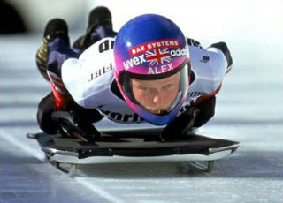
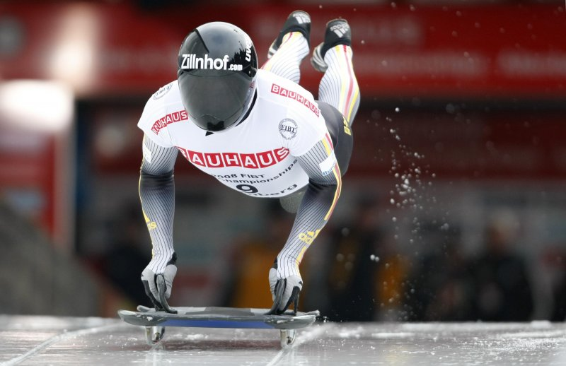
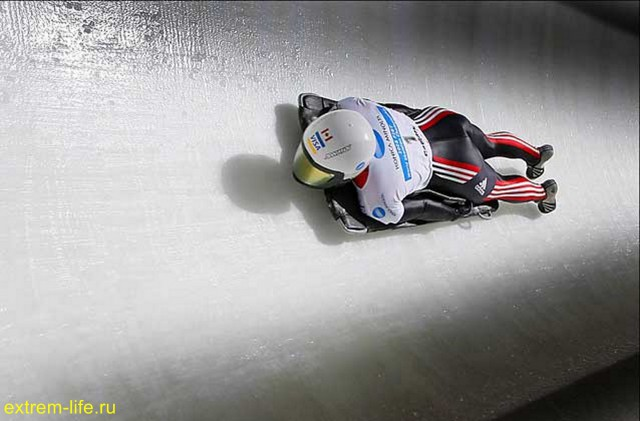
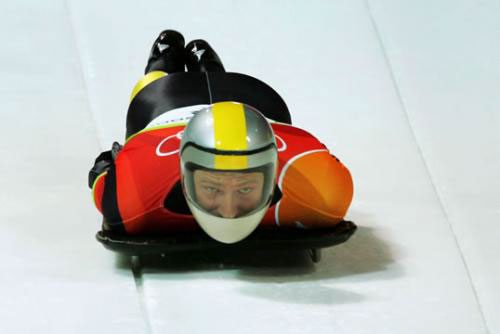
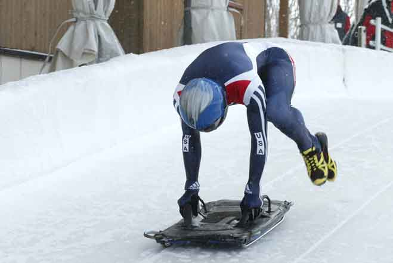

Скелетон
Многие из вас, наверное, помнят старинную русскую детскую забаву – катание на санках.
Ну кто же не брал, в свое время, под руку деревянные санки и не скатывался на них со снежной горы? А порой и кубарем параллельно с санками?
Ситуация знакомая для многих.
Так получилось, что еще со времен XIX века катание на санках получило статус официального вида спорта. На сегодняшний день существует три разновидности санного спорта – бобслей, сани и скелетон.
Есть разные мнения и версии происхождения названия «Скелетон». Некоторые утверждают, что сани в этом виде спорта действительно напоминают форму скелета, отсюда и название. Другие же стоят на том, что часть слова "Skele" происходит из неправильного прочтения норвежского слова "Kjaelke" (сани, которые используют норвежские рыбаки). Кто из двух сторон прав – вопрос риторический, бесспорно одно – скелетон является очень динамичным и интересным олимпийским видом спорта.
Так что же это за диковинный вид спорта такой – скелетон? Он представляет собой сани c утяжеленной рамой без руля, на которых спортсмен лежит головой вперёд по направлению движения лицом вниз. Для управления используются специальные шипы на ботинках. Снизу к скелетону крепятся два стальных конька, а сверху - две ручки. Расположенные спереди и сзади скелетона бамперы играют роль глушителей и защищают спортсмена от ударов о стену ледового желоба.
Интересный факт
Допустимая разница температуры полозьев скелетона по сравнению с контрольным образцом – до 4 градусов Цельсия.
Чтобы все спортсмены были в равных условиях, существуют специальные стандарты саней, одинаковые для всех. Размеры скелетона - от 80 до 120 см длиной и от 34 до 38 см шириной. Нагревать коньки запрещено, перед каждым стартом проверяется их температура. На финише сани и спортсмен взвешиваются, максимальный вес скелетона - 43 кг для мужчин и 35 кг для женщин, вес скелетона со спортсменом не должен превышать 115 кг для мужчин и 92 кг - для женщин. В случае необходимости допускается утяжелять сани балластом.
Соревнования по скелетону впервые были представлены на II зимних Олимпийских играх, проводивших в Санкт-Морице в 1928 году. Первым олимпийским чемпионом в этом виде спорта стал американец Дженнинсон Хитон. Серебряную медаль завоевал младший брат победителя - Джон Хитон, а бронзовую - Дэвид Эрл оф Нортеск из Великобритании. С 1982 года начали проводить чемпионаты мира по данному виду спорта.
А что же происходит со скелетоном в нашей стране? Российские спортсмены впервые приняли участие в соревнованиях по скелетону в 1994 году на этапах Кубка мира в Инсбруке и Санкт-Морице - С. Сафронов (Москва) и П. Герасимов (Москва), а также на чемпионате мира в Альтенберге. В 2010 году на Олимпиаде в Ванкувере Александр Третьяков завоевал бронзовую медаль и стал первым призером на подобных соревнованиях среди наших соотечественников. Спустя три года Александр принес нашей стране и первое «золото» чемпионатов мира в этом виде спорта, выиграв соревнования в Санкт-Морице.
Что ж, посмотрим, какие результаты будут у сборной России на XXII Олимпийских зимних играх в Сочи. Все предпосылки для успешного выступления на домашних Играх у российских спортсменов есть.
{kind=link}
{kind=link}
{kind=link}
{kind=link}
{kind=link}